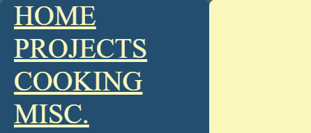

This summer, I decided I wanted to learn how to create my own wesbite. However it turned out to be a more difficult endeavor than I anticipated.
Being a CS major, I wanted to create my website using HTML/CSS rather than through a website builder, like SquareSpace.
I had seen some HTML code before when I tinkered with webscraping, but my experience with HTML and CSS was essentially non existent.
For my learning, I decided to follow this Youtube tutorial. Each lesson was well explained and I got a basic idea of the elementary HTML/CSS concepts like:
I decided to sketch out the rough idea of my website in Paint. I wanted to keep it simple, look relatively good, and be something I could be proud of.
For colors I wanted the website to be primarily royal blue (#234E70) and pale yellow (#FBF8BE).
The website would be divied into 3 sections - Projects, Cooking, and Misc. Each would have relevant items and items would be displayed as a grid to keep the layout consistent.
Furthermore, I wanted a permanent header that always displayed as you scrolled through items in each section. (As of writing there is not enough items to see this effect)
And then came time to write the website.
Everything seemed fine and dandy while brainstorming, but while staring at a blank "website" it's hard to start.
Learning concepts in bite-sized 10-15 minutes was relatively hard, but applying these concepts to create a website was a different beast.
So I held out on creating my website that day. And the next. And that week. And the following week.
Often the hardest part is taking the first step. That first sentence in an essay. The first step in a marathon. But once you do, everything else falls into place.
Now of course, my website is not the best out there. Far from it. My HTML/CSS is not the most consise. I probably used some frowned upon writing conventions in my code that'll hurt in the future.
My writing isn't amazing. The website isn't the most pleasing on the eyes.
But over the course of 3 weeks of learning and 2 weeks of creating, I finished.
My goals were to make a website that was simple, looked decent, and something I could be proud of.
